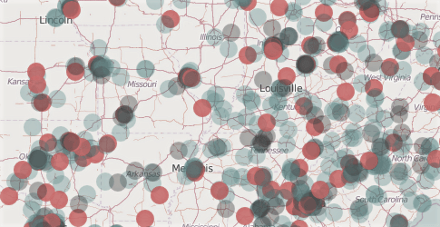
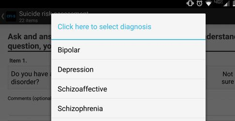

research
Peer-reviewed articles
All the peer reviewed articles I've published, without a paywall.
// peterphalen.github.io
A more conventional record of my clinical and academic work lives at the publications page and in my CV.
All the peer reviewed articles I've published, without a paywall.
Invited talk for the Ohio EPICENTER Speaker Series about work I've done on Dialectical Behavior Therapy (DBT) for people with psychosis.
Evaluation of Baltimore Ceasefire 365, a locally organized, non-governmental coalition against murder. Now published in the American Journal of Public Health. See the final analysis markdown here.
Bayesian multilevel modeling of overdose mortality trends in Indianapolis, later published in Addictive Behaviors.
Built the Android framework for Josh Begley's Metadata app, which sends you a notification when U.S. drone strikes are reported. Both Apple and Google removed these. You can see an archive of the Google Play page here.
Replaces some words that are predictably used to dehumanize people with different words that are more humanizing.
Android version of the app. Notifies you whenever police kill someone in the United States.
Unarmed and armed. Grandparents and children. Black and white. How did they die? What were their names?

This app has been used in combination with biomarker data to predict suicidality among people with mental health diagnoses. The project attracted some press.

European-style mental healthcare has had to adapt to West Africa, where traditional healers typically get more respect than psychiatrists.
In hospitals across the USA, emotionally distressed patients are regularly cuffed and strapped to chairs, sometimes for hours. In Guinea this doesn't really happen. What can we learn?
Two French translations published into the public domain for Project Gutenberg. They're available for free and accessible on e-readers.